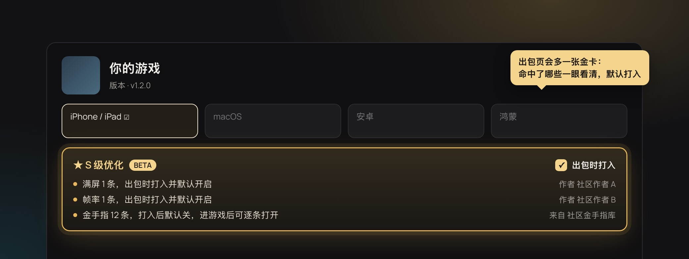
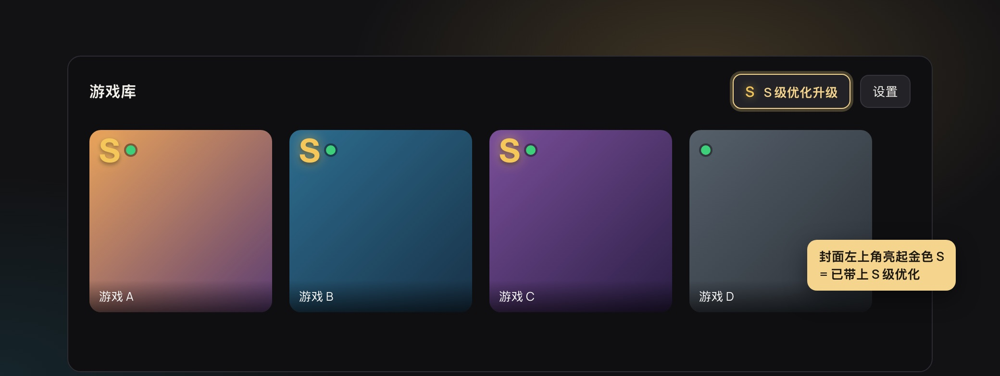
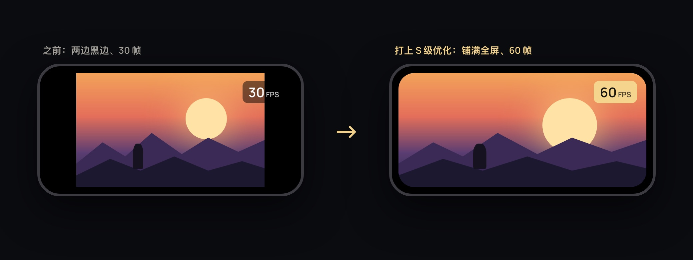
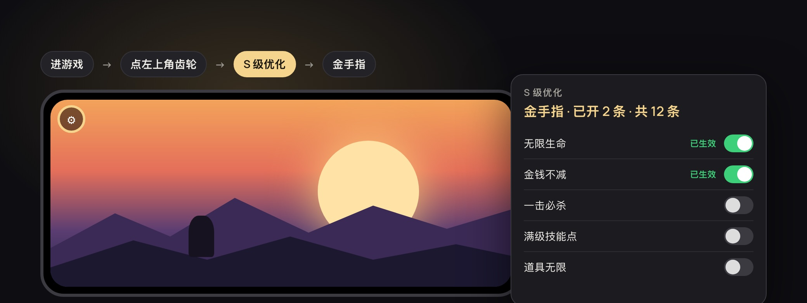

S 级优化
满屏、高帧率、金手指：出包时按你的游戏版本自动配好。Mac、iPhone、iPad 都支持。

出包时，自动带上社区补丁和金手指
S2Arm 按你的游戏版本，从社区补丁库里找能用的满屏补丁、帧率补丁和金手指，出包时一起打进去。
不用自己找、自己装。照常点「开始出包」就行，命中的会自动打进包。
选一款去出包：出包页上金色的「S 级优化」卡片列出命中的每一项和作者，右边的「出包时打入」默认勾着，不要可以取消。

已经导出的游戏，不用重新出包
已经导出到 Mac 和 iPhone 上的游戏，更新 S2Arm 后自动补上 S 级优化：满屏、帧率、金手指。
Mac / Windows：游戏库顶部点S 级优化升级，电脑和 iPhone 上的老游戏都在这升级。只换程序，存档不动。
Mac、Windows 和 iPhone 的游戏库里，封面左上角亮起金色 S 的就是已带上的；出包时取消了「出包时打入」的不亮。

画面铺满，帧率翻倍
满屏补丁按你的屏幕比例铺满，不留黑边、人物不变形；帧率补丁让 30 帧的游戏跑 60，高刷屏能到 120。
命中的满屏、帧率补丁默认开着（没有同版本满屏补丁会从别的版本移植），帧率自动挑最高一档。闪退了，下次启动先关掉当时开着的补丁和金手指，并告诉你关了哪些。
想关掉：iPhone / iPad 在游戏里点左上角齿轮 → S 级优化 → 社区补丁；调帧率档位在齿轮 → 设置… → 画面。Mac 在游戏库选中这款，点齿轮「启动设置」。

金手指，进游戏逐条打开
社区整理好的金手指，按你的游戏版本自动配好，出包时一起打进去。
打进去后默认关。想用哪条就打开哪条，约 1 秒生效，不用重启游戏。
iPhone / iPad：游戏里点左上角齿轮 → S 级优化 → 金手指。Mac：游戏库选中这款，点齿轮「启动设置」。Windows：这款游戏菜单里的「金手指…」。